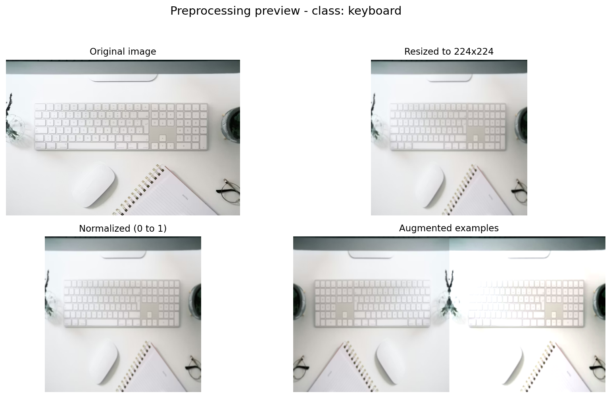
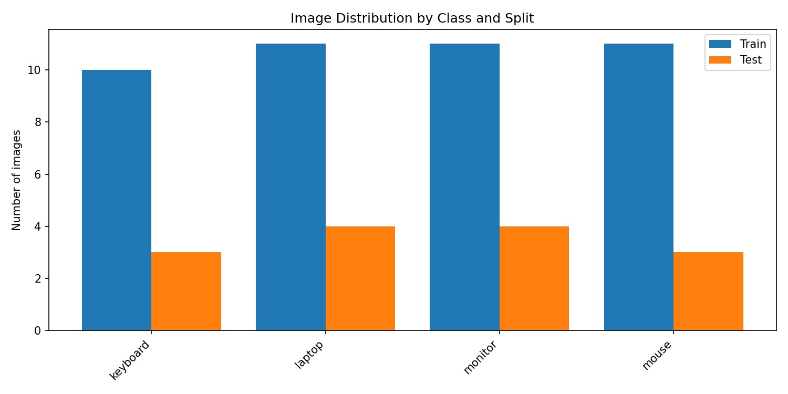

Objectif
Construire un classifieur multi-classe capable de reconnaître automatiquement 4 catégories de matériel informatique à partir d'images brutes, en exploitant les représentations apprises par un réseau profond.
keyboard
laptop
monitor
mouse
Dataset
43
Train
8
Validation
12
Test
Images organisées selon le standard ImageFolder de PyTorch. Split 70/15/15.
Méthode
1
ResNet18 pré-entraîné sur ImageNet — backbone gelé
2
Remplacement de la couche FC finale → 4 sorties
3
Option fine-tuning de
layer4 pour ajustement profondPrétraitement & Augmentation
PhaseTransformations
Train
RandomResizedCrop · HorizontalFlip · ColorJitter
Val / Test
Resize(224) · Normalisation ImageNet
Rapport de Classification
| Classe | Précision | Rappel | F1 | Support |
|---|---|---|---|---|
| keyboard | 1.000 | 1.000 | 1.000 | 1 |
| laptop | 0.500 | 0.250 | 0.333 | 4 |
| monitor | 0.750 | 0.750 | 0.750 | 4 |
| mouse | 0.400 | 0.667 | 0.500 | 3 |
Visualisations


Conclusions & Perspectives
- Limite Dataset trop petit — 100+ images/classe recommandé
- Piste Fine-tuning complet + architectures modernes (EfficientNet)
- Piste Nettoyage et uniformisation des images source
- Piste Cross-validation pour métriques plus robustes